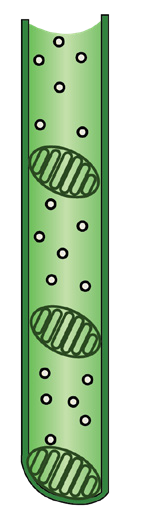
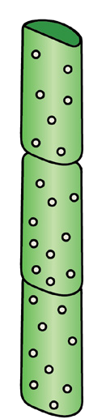
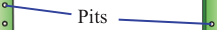

78
Student’s Book - Form Two
Biology for Secondary Schools
Xylem vessel elements
Xylem vessel elements are one of the two water and mineral salts conducting structures of the xylem tissue. Mature xylem vessel elements are long, cylindrical, and tube-like structures.
Their walls are made up of cellulose and lignin. Lignin is deposited on the cell walls of xylem vessel elements to strengthen and make them rigid.
Therefore, the strength and rigidity of the xylem vessel element gives it an additional function of supporting the plant.
A xylem vessel element is made up of tiny hollow cells without end walls.
These cells are called vessel elements and are joined end-to-end to form a pipe-like structure or a hollow tube, as shown in Figure 4.3. Xylem vessel elements begin in the roots through the stem and branch up to every leaf of the plant. Xylem vessel elements have no cytoplasm and nuclei at maturity. Thus, they are said to be dead. The absence of cytoplasm and nuclei make them to be hollow tubes, which then act as pipes.
This enables them to transport a larger volume of water and mineral salts. The xylem vessel elements are found in flowering plants (angiospermophytes) only.
Pits
Perforation plate
Vessel element



Figure 4.3: Xylem vessels
Tracheids
Tracheids are series of interconnected
dead, elongated, tube-like cells with
tapering ends, as shown in Figure 4.4.
They are the only xylem conducting tissues in coniferophytes and
pteridophytes. In angiospermophytes,
both tracheids and xylem vessel elements
are present. Like vessels, tracheids have
a thick lignified wall and lack protoplasm
that is cytoplasm, and nuclei. Both
xylem vessel elements and tracheids
are involved in transporting of water
and mineral salts in plants. Tracheids
and vessel elements differ in their shapes
and structures. Tracheids are longer than
vessel elements. They are connected
laterally to enable continuous flow of
water and mineral salts while the vessel
elements are connected end to end to
form long tubes called xylem vessels.
Tracheid end walls have holes unlike
xylem vessel elements end walls that
have perforations. Tracheids have small
lumen and are narrower than xylem
vessel elements. This makes tracheids
less efficient in the conduction of water compared to xylem vessel elements.
08/04/2026 10:18:20